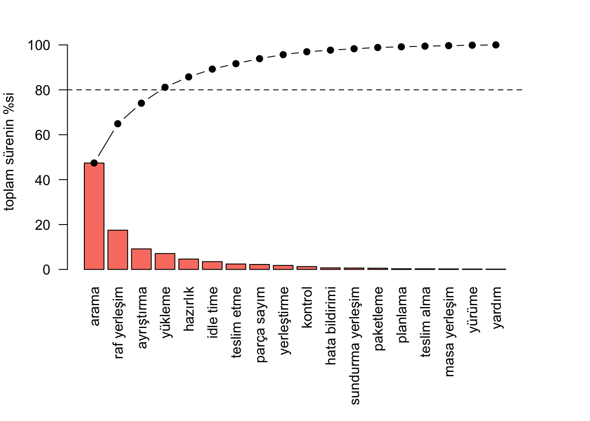
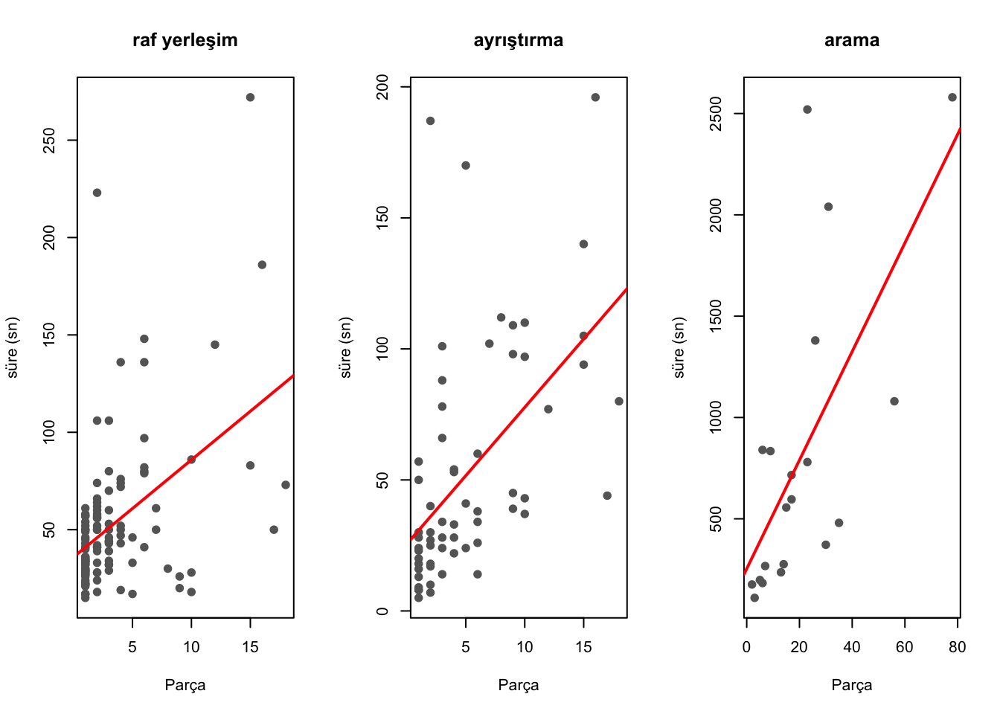
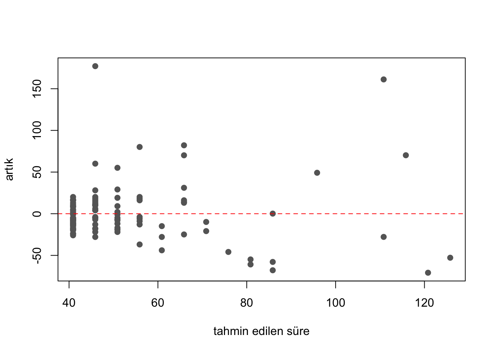
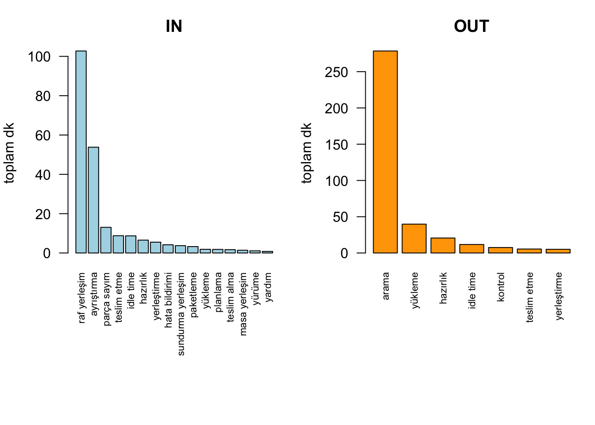

Staj Projesi: Depo Operasyonlarında Zaman Etüdü ve İstatistiksel Analiz
Proje Hakkında
Staj yaptığım firmanın crossdock deposunda 5 iş günü boyunca zaman etüdü yaptım. Operasyondaki işlemleri kronometreyle ölçtüm ve her gözlem için tarih, akış (IN/OUT), Parça miktarı, aktivite türü, süre ve çalışan kişi sayısını kaydettim. Toplamda 263 gözlem topladım.
Bu sayfada verinin analizini R ile yaptım. Amacım üç soruya cevap bulmaktı:
Depoda zaman en çok hangi işlemlere gidiyor?
Temel işlemler için standart zaman ne olmalı?
Parça miktarı işlem sürelerini açıklıyor mu?
Veri Hazırlığı
Ham veriyi önce Excel’de temizledim: akış sütunundaki fazla boşlukları kaldırdım, IN/OUT bilgisini ayrı bir yön sütununa ayırdım ve boş satırları sildim. Parça miktarı boş olan satırları silmedim çünkü bunlar parçayla ilgisi olmayan işlemler (yürüme, bekleme gibi), regresyona zaten girmeyecekler.
Kodu göster
library(readxl)df <-read_excel("data/TIME_STUDY.xlsx")# sutun adlarini kisalttim, kodda yazmasi kolay olsun diyenames(df) <-c("tarih", "akis", "yon", "soir", "aktivite", "sure", "parca", "kisi")nrow(df)
[1] 263
Kodu göster
table(df$yon)
IN OUT
224 39
Keşifsel Veri Analizi (EDA)
Önce her aktivitenin kaç kez gözlendiğine ve süre dağılımına baktım.
En çok gözlenen işlemler raf yerleşim (117) ve ayrıştırma (61). Çoğu aktivitede ortalama medyandan büyük, yani dağılımlar sağa çarpık. O yüzden boxplot’u log ölçekte çizdim.
par(mar =c(9, 4, 2, 4))cb <-barplot(yuzde, las =2, col ="salmon", ylim =c(0, 105),ylab ="toplam sürenin %si")lines(cb, kumulatif, type ="b", pch =19)abline(h =80, lty =2)

Pareto grafiği: kesikli çizgi %80 sınırı
Sonuç beni açıkçası şaşırttı. Gözlemlerin sadece %8’i arama olmasına rağmen toplam sürenin %47’si parça aramaya gidiyor. Ortalama bir arama yaklaşık 13 dakika sürüyor ve neredeyse tamamı OUT (sevkiyat) sürecinde gerçekleşiyor. Toplam sürenin %81’i ise sadece 4 aktivitede toplanıyor: arama, raf yerleşim, ayrıştırma ve yükleme.
Depoda parça takibi raf seviyesinde yapılmaktadır; parçanın hangi rafta olduğu bilinmekle birlikte, aynı rafta birden fazla parça türü bulunduğundan çalışanın raf içinde tek tek kontrol yapması gerekmektedir. Arama süresinin büyük kısmı bu raf içi kontrolden kaynaklanmaktadır. Arama, mevcut sistemde zorunlu olsa da parçaya değer katmayan bir faaliyettir ve lokasyon takibinin raf içi göz/bölme seviyesine indirilmesi, raf içi etiketleme veya aynı rafta karışık parça depolamanın azaltılması gibi iyileştirmelerle büyük ölçüde ortadan kaldırılabilir. Toplam sürenin %47’sinin aramaya gitmesi, iyileştirme potansiyelinin en yüksek olduğu alanın burası olduğunu göstermektedir.
Standart Zaman Analizi
Standart zaman hesabında allowance oranını varsayımla seçmek yerine kendi verimden hesapladım: gözlemlediğim kayıp zamanların (bekleme, yürüme, yardım) verimli zamana oranı %3,9 çıktı. Literatürde kişisel ihtiyaç ve yorgunluk payıyla birlikte %9-15 kullanıldığını da not etmek lazım, benim oranım sadece ölçebildiğim kayıpları kapsıyor. Ayrıca sahada fark ettiğim bir durum bu oranı daha da aşağı çekiyor: yürüme çoğu zaman ayrı bir faaliyet olarak değil, başka işlerle eş zamanlı gerçekleşiyordu. Örneğin çalışanlar parçayı sisteme kaydetme işini yürürken tamamlıyordu; bu yüzden yürümeyi çoğunlukla ayrı ölçemedim ve bu süreler ilgili aktivitelerin süresinin içine karıştı. Dolayısıyla hesapladığım allowance gerçek kayıp zamanın alt sınırı olarak görülmeli.
Standart zamanı sadece yeterli gözlemi olan üç aktivite için hesapladım. Diğer aktivitelerde gözlem sayısı 11’in altında kaldığı için güven aralığı hesaplamak istatistiksel olarak doğru olmazdı.
Raf yerleşim ve ayrıştırma için standart zaman yaklaşık 55 saniye çıktı. Arama için hesaplanan 827 saniyelik değer ise bir standart olmaktan çok, sürecin ne kadar kontrolsüz olduğunun göstergesi (güven aralığı 457-1134 sn arasında, çok geniş).
Regresyon: Parça Miktarı Süreyi Açıklıyor mu?
Bu bölümde Design of Engineering Experiments ve Data Mining dersinde öğrendiğim doğrusal regresyon yaklaşımını kendi sahadan topladığım veriye uyguladım. Her aktivite için ayrı model kurdum çünkü işlemlerin doğası farklı, tek modelde birleştirmek yanıltıcı olurdu.
Model: süre = b0 + b1 x Parça
Modele geçmeden önce ilişkinin yönünü görmek için korelasyonlara baktım.
Kodu göster
raf <- df[df$aktivite =="raf yerleşim"&!is.na(df$soir), ]ayr <- df[df$aktivite =="ayrıştırma"&!is.na(df$soir), ]ara <- df[df$aktivite =="arama"&!is.na(df$soir), ]korelasyon <-data.frame(aktivite =c("raf yerleşim", "ayrıştırma", "arama"),n =c(nrow(raf), nrow(ayr), nrow(ara)),korelasyon =round(c(cor(raf$soir, raf$sure),cor(ayr$soir, ayr$sure),cor(ara$soir, ara$sure)), 2))knitr::kable(korelasyon, caption ="Parça miktarı ile süre arasındaki korelasyon")
Parça miktarı ile süre arasındaki korelasyon
aktivite
n
korelasyon
raf yerleşim
117
0.46
ayrıştırma
61
0.54
arama
20
0.67
Üçünde de pozitif ve orta kuvvette ilişki var. Şimdi modelleri kuruyorum. Süre verisi sağa çarpık olduğu için her aktivitede iki model denedim: düz model ve log dönüşümlü model. İkisini R² üzerinden karşılaştırdım.
Kodu göster
model_raf <-lm(sure ~ soir, data = raf)model_ayr <-lm(sure ~ soir, data = ayr)model_ara <-lm(sure ~ soir, data = ara)# log donusumlu alternatif modellermodel_raf_log <-lm(log(sure) ~ soir, data = raf)model_ayr_log <-lm(log(sure) ~ soir, data = ayr)model_ara_log <-lm(log(sure) ~ soir, data = ara)model_ozet <-function(model, log_model, ad) { s <-summary(model)data.frame(aktivite = ad,katsayi =round(coef(model)[2], 2),p_degeri =signif(s$coefficients[2, 4], 2),R2 =round(s$r.squared, 2),log_R2 =round(summary(log_model)$r.squared, 2))}karsilastirma <-rbind(model_ozet(model_raf, model_raf_log, "raf yerleşim"),model_ozet(model_ayr, model_ayr_log, "ayrıştırma"),model_ozet(model_ara, model_ara_log, "arama"))knitr::kable(karsilastirma, row.names =FALSE,caption ="Regresyon modellerinin karşılaştırması")
Regresyon modellerinin karşılaştırması
aktivite
katsayi
p_degeri
R2
log_R2
raf yerleşim
4.99
2.0e-07
0.21
0.16
ayrıştırma
5.21
6.7e-06
0.29
0.35
arama
26.80
1.3e-03
0.45
0.44
Örnek olarak raf yerleşim modelinin tam çıktısı:
Kodu göster
summary(model_raf)
Call:
lm(formula = sure ~ soir, data = raf)
Residuals:
Min 1Q Median 3Q Max
-70.805 -16.891 -5.903 11.103 177.103
Coefficients:
Estimate Std. Error t value Pr(>|t|)
(Intercept) 35.9096 4.3958 8.169 4.51e-13 ***
soir 4.9938 0.8936 5.588 1.56e-07 ***
---
Signif. codes: 0 '***' 0.001 '**' 0.01 '*' 0.05 '.' 0.1 ' ' 1
Residual standard error: 34.74 on 115 degrees of freedom
Multiple R-squared: 0.2136, Adjusted R-squared: 0.2067
F-statistic: 31.23 on 1 and 115 DF, p-value: 1.563e-07
Kodu göster
par(mfrow =c(1, 3))plot(raf$soir, raf$sure, pch =19, col ="gray40",xlab ="Parça", ylab ="süre (sn)", main ="raf yerleşim")abline(model_raf, col ="red", lwd =2)plot(ayr$soir, ayr$sure, pch =19, col ="gray40",xlab ="Parça", ylab ="süre (sn)", main ="ayrıştırma")abline(model_ayr, col ="red", lwd =2)plot(ara$soir, ara$sure, pch =19, col ="gray40",xlab ="Parça", ylab ="süre (sn)", main ="arama")abline(model_ara, col ="red", lwd =2)

Parça miktarı ile süre ilişkisi (kırmızı: regresyon doğrusu)
Üç modelde de Parça katsayısı istatistiksel olarak anlamlı (hepsinde p < 0.01). Katsayılara göre her ek parça raf yerleşim süresine yaklaşık 5 sn, ayrıştırmaya 5,2 sn, aramaya ise 27 sn ekliyor. Aramadaki katsayının bu kadar büyük olması saha gözlemimle de uyuşuyor: sipariş ne kadar çok kalem içeriyorsa o kadar çok rafta raf içi kontrol yapmak gerekiyor.
R² değerleri ise 0,21 ile 0,45 arasında. Yani parça miktarı anlamlı bir açıklayıcı olsa da tek başına yeterli değil; raf yerleşim süresindeki değişkenliğin yaklaşık %79’u modelde olmayan faktörlerden kaynaklanıyor. Bence en önemli eksik değişkenler raf mesafesi ve raf seviyesi, çünkü bunları ölçme imkanım olmadı. Ayrıca yürüme sürelerinin aktivite sürelerine gömülü ölçülmesi de modellerin açıklayamadığı değişkenliğin bir kısmını oluşturuyor olabilir. Log dönüşümü karşılaştırmasında ise sadece ayrıştırmada uyum belirgin şekilde iyileşti (0,29’dan 0,35’e), diğer ikisinde düz model yeterli.
Son olarak derste model varsayımlarını kontrol etmenin önemini görmüştük, o yüzden artık (residual) grafiğine baktım.
Kodu göster
plot(fitted(model_raf), resid(model_raf), pch =19, col ="gray40",xlab ="tahmin edilen süre", ylab ="artık")abline(h =0, lty =2, col ="red")

Raf yerleşim modeli artık grafiği
Artık grafiğinde büyük tahmin değerlerinde saçılımın arttığı görülüyor (heteroskedastisite). Bu, sabit varyans varsayımının tam sağlanmadığını ve modelin büyük parça miktarlarında daha az güvenilir olduğunu gösteriyor. Bu da aslında log dönüşümü gibi alternatifleri denememin sebebiydi.
IN ve OUT Süreçlerinin Karşılaştırması
Kodu göster
par(mfrow =c(1, 2), mar =c(9, 4, 3, 1))in_t <-sort(tapply(df$sure[df$yon =="IN"], df$aktivite[df$yon =="IN"], sum),decreasing =TRUE)out_t <-sort(tapply(df$sure[df$yon =="OUT"], df$aktivite[df$yon =="OUT"], sum),decreasing =TRUE)barplot(in_t /60, las =2, col ="lightblue", main ="IN", ylab ="toplam dk")barplot(out_t /60, las =2, col ="orange", main ="OUT", ylab ="toplam dk")

Yön bazında toplam süre dağılımı
İki süreç birbirinden çok farklı davranıyor. IN tarafı (224 gözlem) kısa ve öngörülebilir işlemlerden oluşuyor: raf yerleşim ve ayrıştırma medyanları 37-43 saniye. OUT tarafında ise (39 gözlem) zamanın büyük kısmı aramaya gidiyor. OUT sürecini daha az gözlemleyebildiğim için bu taraftaki bulgular IN’e göre daha az kesin.
Sonuç ve Öneriler
Toplam sürenin %47’si parça arama faaliyetine harcanıyor. En yüksek etkili iyileştirme, depoda adresleme/lokasyon takip sisteminin iyileştirilmesi olur.
Raf yerleşim ve ayrıştırma işlemleri için standart zaman yaklaşık 55 saniye olarak hesaplandı (%95 güven aralıklarıyla birlikte).
Parça miktarı işlem sürelerini anlamlı ama kısmi olarak açıklıyor. Gelecekte yapılacak bir etütte raf mesafesi, raf seviyesi ve ekipman kullanımı da kaydedilirse çok daha güçlü bir model kurulabilir.
OUT süreci için gözlem sayım azdı; sevkiyat tarafına odaklanan ek bir etüt yapılması faydalı olur.